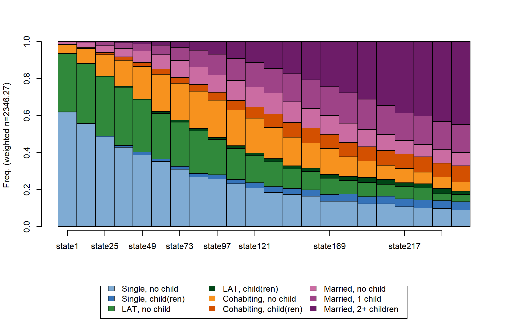
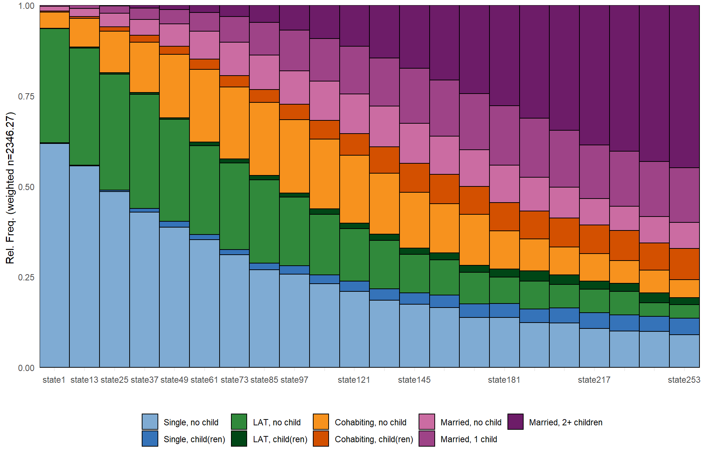
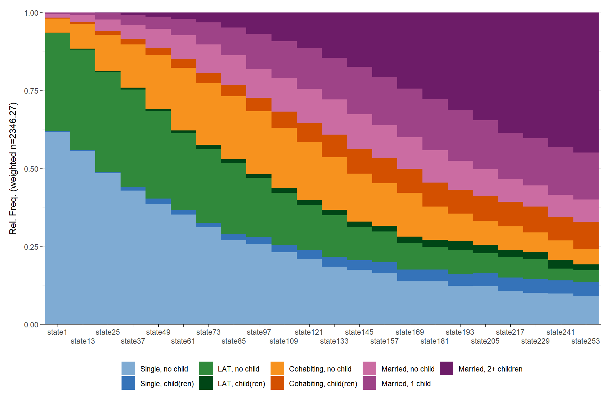
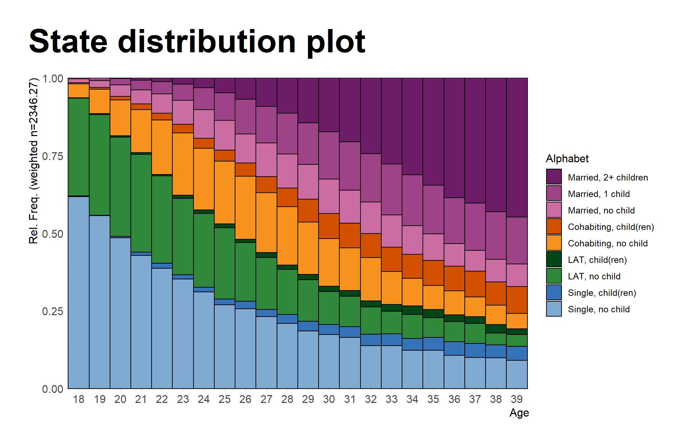
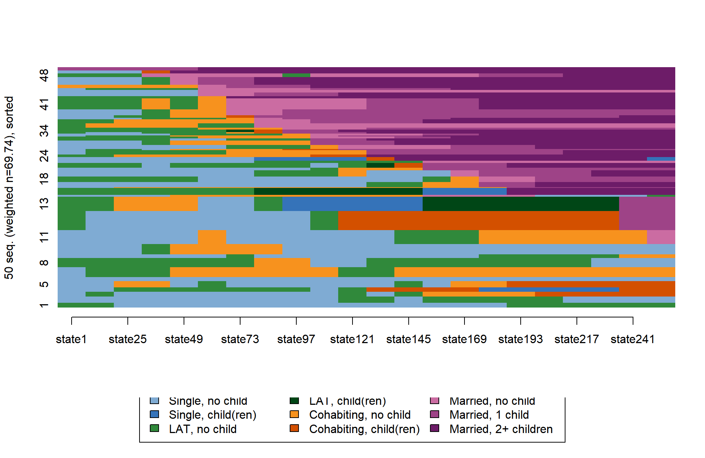
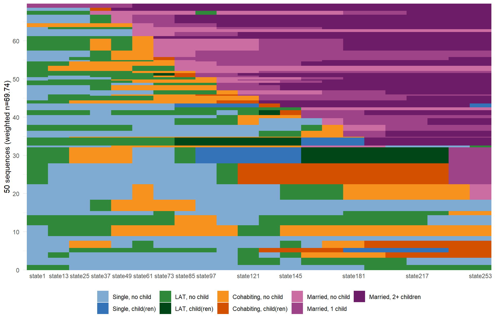
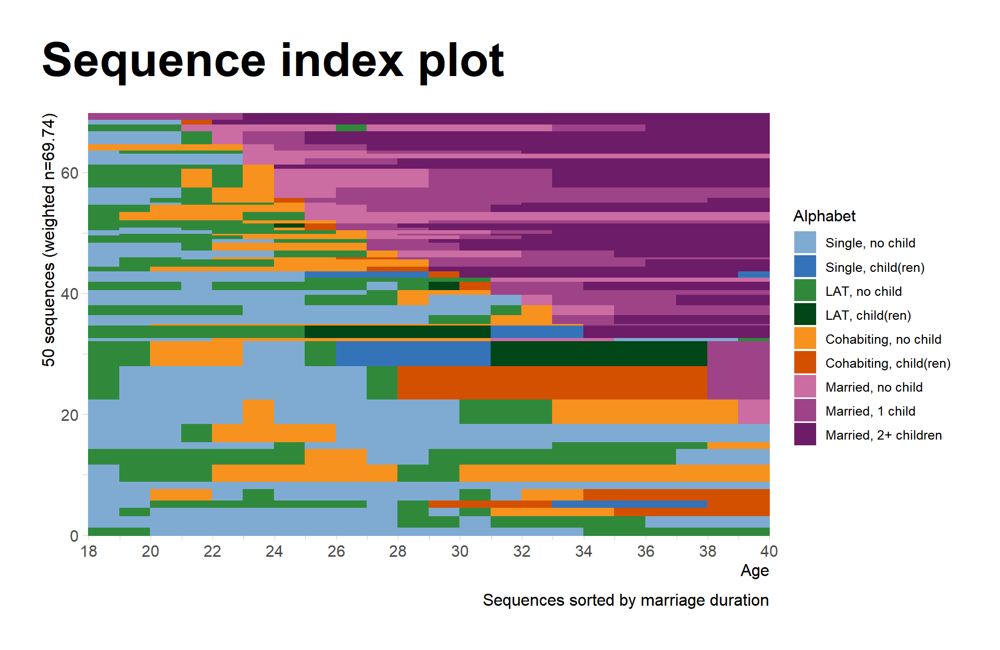

Click here to get instructions…
- Please download and unzip the replication files for Chapter 2 ( Chapter02.zip).
- Read
readme.htmland run2-0_ChapterSetup.R. This will create2-0_ChapterSetup.RDatain the sub folderdata/R. This file contains the data required to produce the state distribution plot shown below. - We also recommend to load the libraries listed in the Chapter 2’s
LoadInstallPackages.R
# assuming you are working within .Rproj environment
library(here)
# install (if necessary) and load other required packages
source(here("source", "load_libraries.R"))
# load environment generated in "2-0_ChapterSetup.R"
load(here("data", "R", "2-0_ChapterSetup.RData"))
Virtually all figures shown in the book were rendererd with
TraMineR::seqplot which uses base R’s plot
function. While there is nothing wrong with that, many R users tend to
prefer {ggplot2} for visualizing their
data.
We wrote a little R package named {ggseqplot}
that reproduces some of the sequence plots from {TraMineR}’s seqplot using
{ggplot2}. These plots are produced on
the basis of a sequence object defined with
TraMineR::seqdef. The package automates the reshaping and
plotting of sequence data required to render the plots with {ggplot2}.
{ggseqplot}
is in an early stage of development and will be hopefully complemented
by a few additional functions in the near future.
Currently, {ggseqplot}
only contains two functions: - ggseqiplot
(TraMineR::seqIplot) - ggseqdplot
(TraMineR::seqdplot)
The package is stored on GitHub and you can install and load it with the following commands:
devtools::install_github("maraab23/ggseqplot")
library(ggseqplot)
State distribution plot
In the following example we are rendering state distribution plots of
the sequence object partner.child.year.seq.
We start by comparing seqdplot and
ggseqdplot in their most basic specification:
seqdplot(partner.child.year.seq)
ggseqdplot(partner.child.year.seq)
Note that the somewhat awkward labeling of the x-axis values is a result of using
scale_x_discrete(guide = guide_axis(check.overlap = TRUE))in the definition of the ggseqdplot function. Using this
specification ggplot tries to print as much labels as possible without
overlapping. This might lead to some strange gaps between labels. If you
provide more space for the labels, more labels will be printed.
Of course, the labels can also be adjusted according to your need
using the regular {ggplot2} functions. If you want to
access the value labels for the x-axis, you can either get them from the
sequence object you are plotting
(attributes(partner.child.year.seq)$names) or by saving
your ggseqdplot as an object and then extracting the
required information from the data column
k.
In the following example we utilize another
ggplot2::guide_axis argument to provide more space for the
values labels. More specifically, overlapping labels will be avoided by
printing them in two rows (n.dodge = 2):
dplot <- ggseqdplot(partner.child.year.seq)
dplot + scale_x_discrete(labels = levels(dplot$data$k),
guide = guide_axis(n.dodge = 2))
Alternatively, you could get rid of the long value labels altogether and just print the sequence position as labels on the x-axis.
ggseqdplot(partner.child.year.seq) +
scale_x_discrete()
As ggseqdplot has been written with the intention to
mimic the behavior of seqdplot it’s not very surprising
that both plots look very similar. Just like with seqplot
the ggplot version of the plot allows to turn off weights
and to generate faceted plots by specifying the group
argument. Turn to the documentation for further possibilities to adjust
the outcome of ggseqdplot:
ggseqdplot(partner.child.year.seq,
group = as_factor(family$sex), # `as_factor` not necessary; only used to get nice labels
weighted = FALSE) +
scale_x_discrete()
Note that it is not possible to obtain the faceted output by
manually specifying facet_wrap(~family$sex). That
is because ggseqdplot internally reshapes the sequence data
into an aggregated format that is suitable for generating the plot. In
our example the resulting dataset includes one row for every combination
of sequence position \(k\) (22
positions in our case) and state of the alphabet \(A\) (9 distinct states). With one group
this yields a data set with \(22*9=198\) rows. The data for the faceted
version shown above has 396 rows with 198 for men and women each. The
grouping variable family$sex, however, is of length 1866
(one row for each case).
If you want to access the data used for the plot you can save the plot as a list object:
dplot <- ggseqdplot(partner.child.year.seq,
group = as_factor(family$sex),
weighted = FALSE)
dplot$data# A tibble: 396 x 6
group state k x value grouplab
<fct> <fct> <fct> <fct> <dbl> <glue>
1 Female Single, no child state1 1 0.494 Female (n=1039)
2 Female Single, no child state13 2 0.409 Female (n=1039)
3 Female Single, no child state25 3 0.330 Female (n=1039)
4 Female Single, no child state37 4 0.276 Female (n=1039)
5 Female Single, no child state49 5 0.244 Female (n=1039)
6 Female Single, no child state61 6 0.218 Female (n=1039)
7 Female Single, no child state73 7 0.183 Female (n=1039)
8 Female Single, no child state85 8 0.140 Female (n=1039)
9 Female Single, no child state97 9 0.133 Female (n=1039)
10 Female Single, no child state109 10 0.122 Female (n=1039)
# ... with 386 more rowsOf course, the figures produced with {ggseqplot}
can be adjusted like any other {ggplot2} figure
library(hrbrthemes)
ggseqdplot(partner.child.year.seq) +
scale_x_discrete(labels = 18:39) +
labs(title = "State distribution plot",
x = "Age") +
guides(fill=guide_legend(title="Alphabet")) +
theme_ipsum_rc() +
theme(plot.title = element_text(size = 34,
margin=margin(0,0,20,0)),
plot.title.position = "plot",
axis.title.x = element_text(size=12),
axis.title.y = element_text(size=12))Sequence index plots
We again start with a comparison of the default outputs for
seqIplot and ggseqiplot. We plot a sample of
50 sequences and sort the remaining sequences according to the time
spent in marriage (states 7 to 9).
set.seed(1234)
subset <- sample(1:nrow(partner.child.year.seq),50)
seqIplot(partner.child.year.seq[subset,],
sortv = rowSums(seqistatd(partner.child.year.seq[subset,])[,7:9]))
ggseqiplot(partner.child.year.seq[subset,],
sortv = rowSums(seqistatd(partner.child.year.seq[subset,])[,7:9]))
Note that other than for ggseqdplot the x-axis for
ggseqiplot is on a continuous scale. The following code
chunk illustrates how the plot can be fine-tuned in the well-known {ggplot2} fashion:
ggseqiplot(partner.child.year.seq[subset,],
sortv = rowSums(seqistatd(partner.child.year.seq[subset,])[,7:9])) +
scale_y_continuous(expand = expansion(add = c(.8, 0))) +
scale_x_continuous(breaks = seq(0,22,2),
labels = seq(18,40,2),
expand = expansion(add = c(0.2, 0))) +
labs(title = "Sequence index plot",
x = "Age",
fill = "Alphabet",
caption = "Sequences sorted by marriage duration") +
guides(color="none") +
theme_ipsum_rc() +
theme(plot.title = element_text(size = 34,
margin=margin(0,0,20,0)),
plot.title.position = "plot",
plot.caption = element_text(size=12),
axis.title.x = element_text(size=12),
axis.title.y = element_text(size=12))